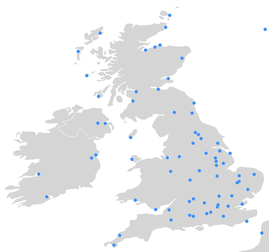
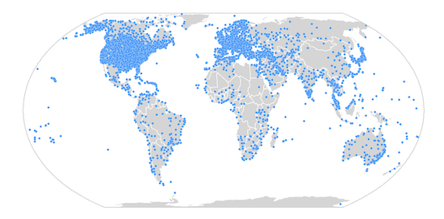
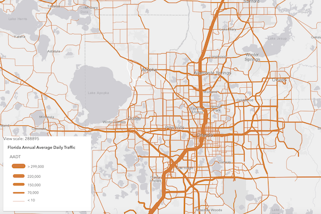
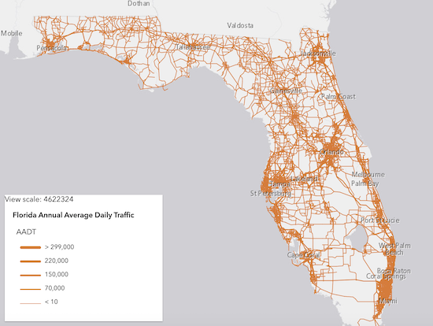
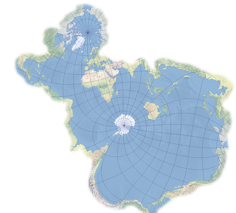

2D Point Clustering (beta)
Point clustering is now a supported method of feature reduction on FeatureLayer, CSVLayer, and GeoJSONLayer in 2D MapViews. See Clustering styles and configurations for more information about the various ways clusters can summarize the points they represent. You can configure additional options for clustering, including clusterRadius and popupTemplate.
layer.featureReduction = {
type: "cluster",
clusterRadius: "100px", // optional
popupTemplate: { // optional
content: "This cluster represents {cluster_count} features."
}
}
Note that clustering is currently not supported in 3D SceneViews, and there are some differences between the 3.x ArcGIS JS API and the 4.x implementations of clustering.
Saving web maps
Web maps can be easily saved to ArcGIS Online and ArcGIS Enterprise with save() and saveAs() methods. This capability is in addition to creating and stylizing web maps in ArcGIS Online and ArcGIS Pro. See Save a web map sample for an example.
Time related updates
We added three new properties for more ways to explore your temporal data: timeExtent, timeOffSet and useViewTime on FeatureLayer, CSVLayer, ImageryLayer and MapImageLayer.
- Compare data across years, see: FeatureLayer timeOffset sample.
- Using timeExtent without the TimeSlider widget, see: Time-based layer sample.
Editing updates
You can add, update, and delete attachments with the FeatureLayer.applyEdits() method. There is also an options object that can be passed to the applyEdits() method, which contains gdbVersion, rollbackOnFailureEnabled, and globalIdUsed properties.
Performance enhancements
- Significantly improved GPU performance by reducing number of polygon vertices drawn.
- When rendering vector tiles, we generate 20-25% fewer WebGL calls, and much fewer JavaScript calls, which results in a smoother interaction experience.
- Improved mesh strategy reduced the number of geometries that needed to be tessellated.
- Optimized the Basemap Gallery widget data loading behavior in 2D MapViews.
- Switching to/from DotDensityRenderer or HeatmapRenderer is much faster.
3D Line of Sight Widget
Use the new Line of Sight widget to analyze visibility in your scene. Place two or more points on buildings, ground and other scene objects to evaluate direct line visibility. Analysis results update interactively as you move the observer or targets within your scene. With the new widget you can for example evaluate the impact of planed construction on the surrounding buildings.
Daylight Widget
Use the new Daylight widget to change the time and date of your scene interactively. This setting determines the sun position, light intensity and shadows casted by 3D objects in your scene. The widget also allows you to animate the sunlight throughout the day.
Labels for 3D Object Scene Layers
SceneLayers that show 3D objects now support labels. Based on the attributes in the Scene Layer cache, you can now use the labelingInfo property, for example to annotate buildings of public interest by name.
Embedded map navigation enhancements
For maps that are embedded in another page, three new properties were added to view.navigation that provide an easy way to enable or disable panning and zooming: browserTouchPanEnabled and mouseWheelZoomEnabled. These properties can be enabled or disabled to significantly improve user experience when single-finger touch panning or when using mouse-wheel scrolling. In the next release this experience will be made even easier to implement for developers.
See: Disable mouse-wheel and single-touch navigation sample
Guide page exposing color ramps
All the color ramps used in the Smart Mapping symbology APIs can now be easily viewed, filtered, and copied to your apps in a guide page: Esri Color Ramps. This guide, together with the new Visualization best practices guide, provides easy access to more than 300 color ramps designed by color experts. They are categorized to help you make smart decisions when choosing colors for renderers and charts.
We also added an API for querying any of these ramps by tag and by name.
Client-side geometry changes
As part of performance optimizations, the API no longer simplifies geometries before they are added to view.graphics, GraphicsLayer, or feature collections added to the FeatureLayer.source. It is the developer's responsibility to check the correctness of polygon geometries before they are added to those layers. You can use the geometryEngine.simplify() method to make sure that polygons display correctly client-side. Note that the FeatureLayer.applyEdits() method automatically simplifies polygon geometries.
Smart Mapping enhancements
All Smart Mapping renderer creator methods added a sizeOptimizationEnabled parameter. When this parameter is true, the generated renderer will contain a Size Variable to control symbol sizes by scale. This applies only to layers rendered in a MapView.
When a SimpleRenderer is used to visualize all features in a layer with the same symbol, that symbol size may vary by scale to improve readability of the map across all scales. The visualization below was generated by setting sizeOptimizationEnabled to true in the locationRendererCreator.createRenderer() method.
| Sizes are larger at large scales | And smaller at small scales |
|---|---|
|  |  |
The sizes defined in size range visualization can now be generated for several scale levels. This was previously supported for polygon layers, but now includes points and polyline geometries. The images below show a layer rendered at different scale levels with the same renderer. This visualization was generated using sizeRendererCreator.createContinuousRenderer().
| Sizes are larger at large scales | And smaller at small scales |
|---|---|
|  |  |
Sketch updates
The Sketch widget by default will continue to create graphics with the same geometry type until the user chooses another tool on the widget. You can change this behavior by setting the sketch's creationMode property. You can also specify how users can create graphics by setting its defaultCreateOptions. By default, users can click or drag the pointer to create vertices. We also added delete() method which will emit a delete event.
Updated Projection Engine
The Projection Engine includes several new projections, such as the Spilhaus world ocean map in a square or "Spilhaus projection" (WKID 54099).

API Modernization
We are planning to make the API return native Promise by default at 4.15, then completely remove Dojo promise at 4.16. A has flag was made available to enable native JavaScript promises in 4.12 to enable this behavior. More details about this functionality will be available in an upcoming blog post.
<script>
var dojoConfig = {
has: {
"esri-native-promise": true
}
};
</script>
We tackled more preparatory work to remove the dependency on Dojo's declare module. The classes from the ArcGIS API for JavaScript are built using dojo/_base/declare. We are migrating to leverage the JavaScript (and TypeScript) class system only. The first step of this migration is to stop using multiple inheritance and adopt the mixin pattern. We added a warning message in the browser console to help remind you about this change. See the updated guide page about Implementing Accessor for more details.
Breaking changes
- When the propagation of an event is stopped on the View, then the propagation of any derived events are stopped. For example, when
stopPropagation()is called on an immediate-click event, click and double-click events are no longer emitted. WhenstopPropagation()is called on an pointer-up event, immediate-click, click and double-click are no longer emitted. This makes implementing event handlers easier, since applications usually want to handle only one of those event types at a time. - FeatureLayerView.queryFeatures and GeoJSONLayerView.queryFeatures results will no longer include
z-valuesin 2D MapView even if the query.returnZ is set totrue. - The Sketch has a new property called creationMode with a default value of
continuous. This allows you to continuously create graphics with same geometry types by default. This is different from the widget's default behavior in previous releases, where you could create a single graphic at a time. - To select or unselect multiple vertices during a graphic update operation using the Sketch widget, we now use
Shift + Left-clickcombination instead ofCtrl + Left-clickon vertices. - 2D measurement widgets changed the base class from
esri-area-measurement-3dtoesri-area-measurement-2dand fromesri-direct-line-measurement-3dtoesri-distance-measurement-2d. - Removed the
getImageUrl()method from MapImageLayer. This method was deprecated since version 4.11. We recommend extending BaseDynamicLayer instead. - Removed the
value-changeandvalues-changeevents from Slider and HistogramRangeSlider. These events were deprecated since version 4.13. We recommend watching the values property or using the other widget events instead. - Removed Hindi (hi) as a supported locale.
- Classes related to ArcGIS Workflow Manager have been removed. They were marked as deprecated starting with version 4.13.
- A HTML sanitizer has been added to all widgets, which removes some HTML for security purposes. This can cause HTML set in PopupTemplate.content or in other widgets to be removed. Instead of setting the
contentas an HTML string, we recommend using a function to modify the dom node directly, as done in the following code snippet.
var template = {
content: function(){
var div = document.createElement("div");
div.className = "myClass";
div.innerHTML = "<span>My custom content!</span>";
return div;
}
}
Bug fixes and enhancements
- BUG-000118361: The BasemapGallery widget no longer asks for portal login credential when groups, basemaps, and layers are public.
- BUG-000121868 & BUG-000122071: Sketch widget behavior is no longer inconsistent when completing a polygon by clicking the first created vertex.
- BUG-000122438: Fixed an issue where the extent of the SceneView wasn't calculated correctly.
- BUG-000124032: Fixed an issue where feature collections using visual variables and/or Arcade based renderers printed "Override" in Legend in printout.
- BUG-000124241: Fixed an issue where the Editor widget would not display updated geometry after feature edits were applied.
- BUG-000124266: Fixed an issue where KMLLayer sometimes did not display depending on the structure of the source data.
- BUG-000124434: Fixed an issue where the Directions widget did not properly localize the turn-by-turn instructions.
- BUG-000124583: It is now possible move Sketch graphics if they are behind graphics on other layers.
- BUG-000124674: Fixed an issue where right-clicking and pasting an address into the Search widget did not give address suggestions.
- BUG-000124691: ClosestFacilityTask now correctly sends the timeOfDay parameter correctly.
- BUG-000124720: Fixed an issue where conversions could not removed in the CoordinateConversion widget.
- BUG-000125210: Fixed an issue where the LayerList would be stuck in an infinite loading animation when no WMSSublayers were visible.
- BUG-000125344: It is not possible to load and display Koop-based feature layers.
- BUG-000125359: Fixed an issue where the listMode property of KMLLayer did not accept a
hide-childrenvalue. - BUG-000125649: Fixed several issues related to crashes on iOS devices.
- BUG-000125662: Fixed an issue where the text can become distorted for some languages with more than 100 different characters using the TextSymbol.
- BUG-000125951: Fixed an issue with the Search widget suggestions not showing properly when the responses do not reach the application in sync. We now cancel out of sync requests using AbortController.
- BUG-000126130: Fixed an issue where some SimpleMarkerSymbol.style property values were not honored by MapImageLayer.
- BUG-000126233: Fixed an issue where the FeatureLayer.labelsVisible property was not properly honored in the current view extent.
- BUG-000126298: Fixed an issue where a point Graphic would be placed at coordinates (0, 0) when elevation mode would be
relative-to-groundin a local SceneView. - BUG-000126349: Fixed an error in the Editor widget when switching feature templates while editing.
- BUG-000126421: Bar chart media elements within popups no longer truncate X-axis labels.
- BUG-000126427: Fixed the documentation for the timeAttribute property of the DirectionsViewModel to be
readonly. - BUG-000126440: Fixed an issue where adding vertices using SketchViewModel would cause errors on specific iOS devices.
- BUG-000126622: Fixed an issue where the FeatureLayer.labelsVisible property was not properly honored when it's value was changed after initial load.
- BUG-000126807: Fixed an issue where Vector tile layers did not respect zoom level visibility.
- BUG-000126308: Fixed an issue where the BasemapLayerList widget was not fully localized to Japanese.
- GEONET-241160: Fixed an issue in 3D where sketching graphics that cross the dateline would get clipped.
- GEONET-241397: Fixed an issue where TextSymbol with Arabic characters was not displayed when it's used to define the symbol property of Graphic.
- Fixed an issue where SceneView.takeScreenshot() with a higher resolution and
ignorePaddingset totruewould shift the center of the scene. - Fixed an issue where a selected polyline graphic of a route segment would persist after clearing with the Directions widget.
- Fixed an issue where image elements allocated in esriRequest weren't garbage collected in Google Chrome.
- Fixed an issue where in SceneView highlight for invisible graphics would still be displayed.
- Fixed an issue where labels did not display consistently when the view.constraints.snapToZoom property was set to
false. - Fixed an issue where the DictionaryRenderer failed to render when
labelingInfois defined on the layer. - Fixed an issue where the Directions widget did not consistently zoom to the full extent of the route.
- Fixed an issue where the KMLLayer.fullExtent property was not properly honored.
- Fixed an issue where the Measurement widget failed with some polar projections.
- Fixed an issue where the geometryEngine failed with some polar projections.
- Fixed an issue where the listMode property inconsistently honors a
hide-childrenvalue. - Fixed an issue where the calendar was constrained by the directions panel with the Directions widget.
- Fixed an issue where the results of getResultData() sometimes did not contain
morzvalues. - Fixed an issue with printing ImageryLayers with an assigned renderer.
- Fixed an issue with the tooltip of a pie chart in a Popup where the total values were repeated twice.
- ENH-000115553: Requests are now made on basemap tiles while calling MapView goTo().
- ENH-000120958: The view's momentum can be disabled when panning in a MapView using the momentumEnabled property.
- ENH-000124802: Added the ability to findLayerByID() for basemap layers.
- Added support for displaying FeatureLayer with a UniqueValueRenderer with a
nullvalue. - Added support for printing customParameters and customLayerParameters properties of OGC layers.
- Added the origin and final destination to the detailed turn-by-turn instructions of the Directions widget.
- Increased the length of the label of the tooltip of a pie chart in a Popup.
- The Legend widget supports CIMSymbol and WebStyleSymbol.
- The Print widget prints a localized date in the printout by default.
- The Search widget supports spaces for the suggest() method, which results in more accurate search suggestions.
- The Swipe widget now works with VectorTileLayers in the
leadingLayersortrailingLayers.
Added Classes, Properties, Methods, Events
Complete list of added Classes, Properties, Methods, Events.
Deprecated Classes, Properties, Methods, Events
Complete list of deprecated Classes, Properties, Methods, Events.
Additional packages
Version 4.14 of the ArcGIS API for JavaScript uses ArcGIS Arcade 1.8 (since 4.13), Dojo 1.14.2 (since 4.11), dgrid version 1.2.1 (since 4.5), and dstore version 1.1.2 (since 4.5). From Dojo 5 we use @dojo/framework version 5.0.4 (since 4.12).
Previous releases
- Version 4.13 - October 2019
- Version 4.12 - June 2019
- Version 4.11 - March 2019
- Version 4.10 - December 2018
- Version 4.9 - September 2018
- Version 4.8 - July 2018
- Version 4.7 - April 2018
- Version 4.6 - December 2017
- Version 4.5 - September 2017
- Version 4.4 - July 2017
- Version 4.3 - March 2017
- Version 4.2 - December 2016
- Version 4.1 - September 2016
- Version 4.0 - May 2016